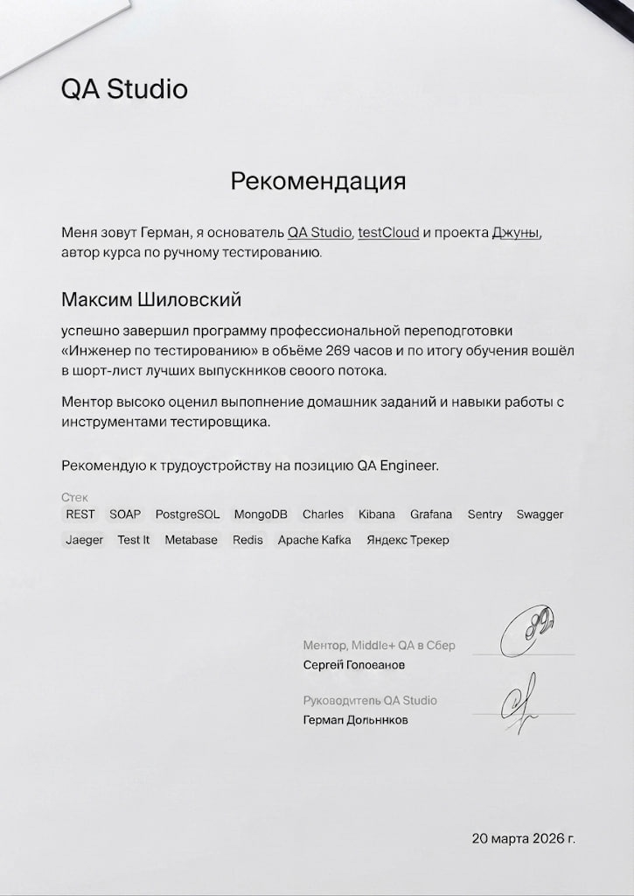
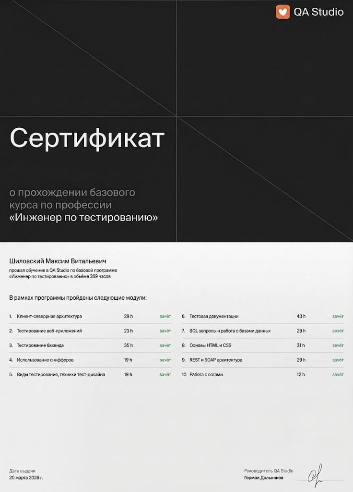
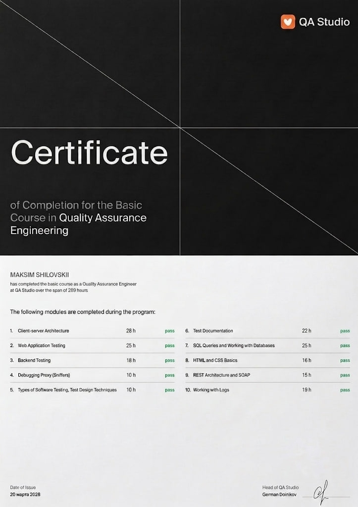
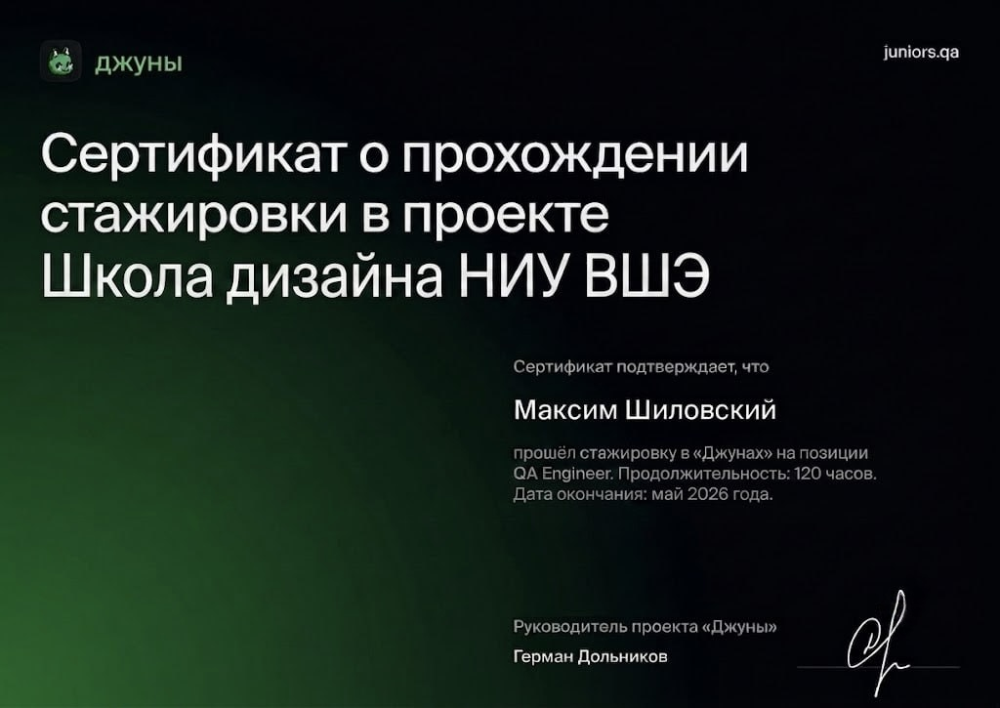
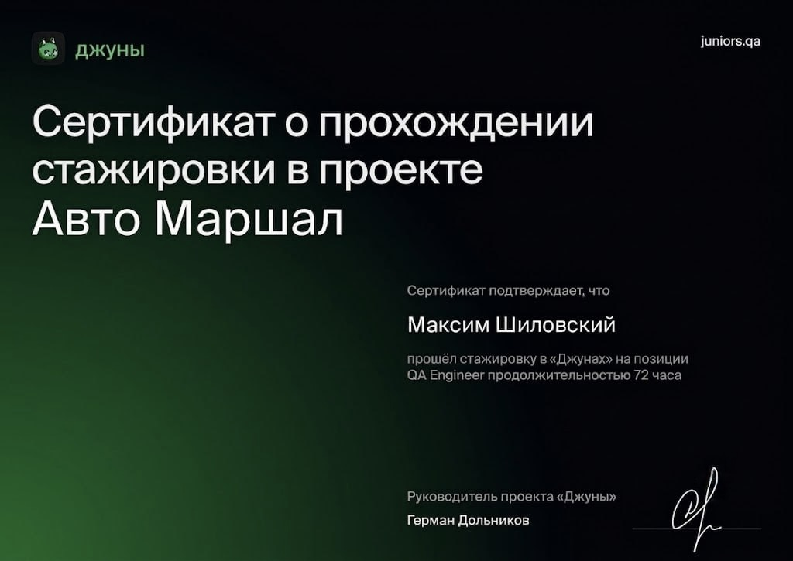

Обучение (QA Studio)
269 ч.
Стажировка (НИУ ВШЭ)
120 ч.
Стажировка (Авто Маршал)
72 ч.
Общий коммерческий опыт
1 год +
Обо мне
QA Engineer с крепкой технической базой в тестировании Web, Backend (API) и мобильных приложений. Отлично понимаю клиент-серверную архитектуру, HTTP/HTTPS, REST/SOAP. Активно применяю AI-ассистентов для оптимизации тест-дизайна и тест-анализа. Соблюдаю культуру удаленной работы: всегда на связи и умею аргументированно приоритизировать баги.
Навыки & Технологический стек
REST API
SOAP
Postman
SQL (PostgreSQL)
NoSQL (MongoDB)
Apache Kafka
Jaeger
Docker
Kibana / Sentry / Grafana
JavaScript (Cypress)
Python (Pytest)
Charles / App Metrica
Яндекс.Трекер / Test IT
Английский B2
Опыт работы & Стажировки
QA Studio Август 2025 — Настоящее время
Junior QA Engineer
- Ежедневный таск-трекинг в Яндекс.Трекер в рамках микросервисной архитектуры (Stage).
- Тестирование REST и SOAP API в Postman (скрипты, параметризация, Mock Server).
- Валидация очередей сообщений через Apache Kafka и трейсинг запросов в Jaeger.
- Написание SQL и NoSQL запросов средней сложности (PostgreSQL, MongoDB).
- Мониторинг серверных логов в реальном времени через SSH (tail -f) и Docker logs.
- Тестирование мобилок (push, debug-сборки, deep links, Firebase).
- Разработка базовых автотестов на JS (Cypress, Page Object) и Python (Pytest, requests).
Школа дизайна НИУ ВШЭ Март 2026 — Май 2026 (3 мес.)
Стажер QA Engineer (Проект «Джуны» — 120 часов)
- Провел полный цикл кроссбраузерного и кроссплатформенного тестирования раздела «Конкурсы».
- Локализовал и задокументировал в Яндекс.Трекер более 20 дефектов (5 из них — blocker).
- Разработал 8 UX/UI-рекомендаций (внедрение «Черновика» и лоадеров), снизивших отток пользователей.
- Проводил верификацию данных бэкенда через PostgreSQL (JOIN, агрегации) и валидацию API в Postman.
Авто Маршал Январь 2026 — Февраль 2026 (2 мес.)
Стажер QA Engineer (Проект «Джуны» — 72 часа)
- Функциональное и регрессионное тестирование веб-сервиса онлайн-бронирования автомобилей.
- Тестирование REST API (эндпоинты, статус-коды, JSON-схемы ответов в Postman).
- Симуляция нестабильного сетевого соединения (Throttling в DevTools, 3G/Edge) для проверки offline-режима.
- Участвовал в Daily Scrum стендапах и презентациях результатов на демо-встречах. Локализовал 15 багов.
Сертификаты и рекомендации

Рекомендательное письмо от СЕО QA Studio

Курс QA Studio (Рус.) — 269 часов

Курс QA Studio (Eng.) — 269 часов

Стажировка НИУ ВШЭ — 120 часов

Стажировка Авто Маршал — 72 часа